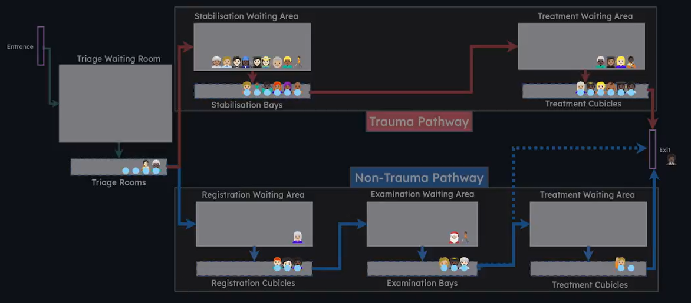

![]()
class TraumaPatient:
def __init__(self, p_id):
self.id = p_id
self.q_time_recep = 0
self.q_time_stabilisation = 0
self.q_time_treatment = 0
class NonTraumaPatient:
def __init__(self, p_id):
self.id = p_id
self.q_time_recep = 0
self.q_time_registration = 0
self.q_time_examination = 0
self.q_time_treatment = 021 An Introduction to Approaching Multiple Entity Types
Let’s imagine we want to model some more variety within the patients (entities) arriving in our model.
Maybe patients are differentiated by something - their method of arrival, or the illness they have, or the severity of their symptoms, and consequently have:
- Different arrival rates
- Different distributions for the amount of time spend with resources
- Different probabilities at branching points
- Different pathways entirely (but still within your system of interest)
The flexibility of simpy and Python does mean there are a range of ways we could approach coding this in.
In this chapter, we will give a bit of an introduction to how you might make decisions about:
- Whether to have a single Patient class or multiple Patient classes that inherit from the basic Patient class.
- Whether to have a single generator or multiple generators.
Note
At this stage in your modelling, you will need to start drawing on your creativity!
Consider the approaches described throughout this chapter and the example given in the next chapter, but work this into your own solution.
21.1 Approaches to managing arrivals
When we start having multiple types of patients, we will need to think about how we set them up in our system.
We could filter our historical data by patient type, work out the inter-arrival time between the ‘seriously injured’ patients and set up a generator for these patients, and then repeat this for the ‘mildly injured’ patients.
However - you could instead have stuck with a single generator, like in our previous approaches throughout the book, but instead sampled whether the incoming patient is a ‘seriously injured’ or ‘mildly injured’ patient at the start of their journey based on known proportions of these patients.
How might we decide which of these approaches to use?
Tip
The basic rule of thumb is have different generators if the entities - and/or what happens to them - is different if they come in via a different route.
You may opt for different generators if
- The inter-arrival rate of that way of entering the system is fundamentally different (the most common reason), and/or
- If you’re modelling a different pathway in the same modelled system (e.g. telephone calls coming in to the same system as patients turning up in person etc).
The authors of this book would generally steer away from having a different generator just for a different patient type or severity, and would instead use attributes to differentiate between the patients. These attributes can then be read when making decisions in the pathway, like where to go in a branch, or which distribution to sample from for an activity time instead.
However, it’s perhaps not always clear cut! For example, our ‘seriously injured’ and ‘mildly injured’ patients above may have different arrival patterns throughout the day, with the seriously injured patients arriving during the morning and evening rush hours, and the mildly injured having a peak in the early evening. Again, we could go about this in multiple ways:
- we could check the simulation time, then look up the probability of them being seriously injured vs mildly injured at that point in time (relating it back to real-world time), and sample accordingly
- we could use two generators, using the method described in the variable arrival rates chapter.
21.2 Multiple patient classes versus a single patient class
Similarly, when it comes to our patient classes, there are multiple ways we could handle it.
We could build multiple separate patient classes. For example, let’s imagine we have trauma patients and non-trauma patients in a system. A diagram of the system is shown below.

In this system, patients have a shared first step, but then move to very separate pathways. We have no need to track the waiting time for a ‘stabilisation waiting area’ for a non-trauma patient, as they will never use that resource.
Consequently, we may opt to do the following.
We could use the concept of inheritance to have a main patient class, then have multiple ‘child’ classes who inherit the properties of the parent class while also recording their own special attributes, with the different processes generating the relevant patient type. You can read more about inheritance in this chapter of the HSMA Python Book. We may opt to do this in cases where our patients share a few attributes, but not all of them.
class Patient(self, p_id):
# Here we can set up any attributes that are common across all of our
# patient types
self.id = p_id
self.q_time_recep = 0
class TraumaPatient(Patient):
def __init__(self, p_id):
# This calls the constructor of the parent (super), and passes the
# patient ID across to it
super().__init__(p_id)
self.q_time_stabilisation = 0
self.q_time_treatment = 0
class NonTraumaPatient(Patient):
def __init__(self, p_id):
super().__init__(p_id)
self.q_time_registration = 0
self.q_time_examination = 0
self.q_time_treatment = 0However, if our patients are following the same or a sufficiently similar route that means that the attributes of the patient classes don’t substantially change, it is often simpler to add an additional attribute that we set when initialising a patient to track their ‘type’, allowing us to then filter and subset patient groups in our results. This is similar to what is done in the priority resources chapter.
In this case, let’s imagine we have two patients of different severities. Patients of a higher severity arrive less frequently but use resources for longer. We may set this up in the following way.
class Patient:
def __init__(self, p_id, severity):
self.id = p_id
self.severity = severity
self.q_time_recep = 0
self.q_time_doctor = 0This means that when the patient is set up, it requires two attributes - the ID, as we have done throughout the book so far, and the severity.
This approach is itself quite flexible - you could sample the severity when generating the patient, or choose to make the severity a parameter that is passed through in your generator method, allowing you to create patients of a given severity or type in that way. This is demonstrated in the next chapter.